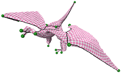

|
Tianyu Zhu (朱天宇)
|
|

|
Greedy Cut Construction for Parameterizations
Tianyu Zhu, Chunyang Ye, Shuangming Chai, Xiao-Ming Fu Computer Graphics Forum (Eurographics), 2020 [Code] [Bibtex] [DOI] [Slide] |